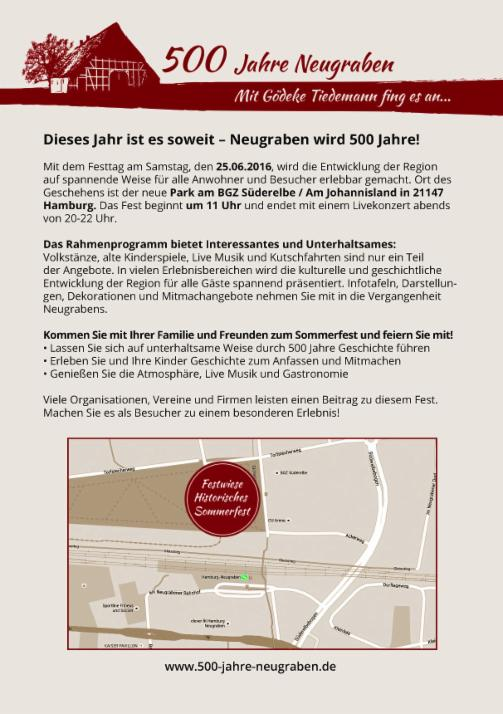
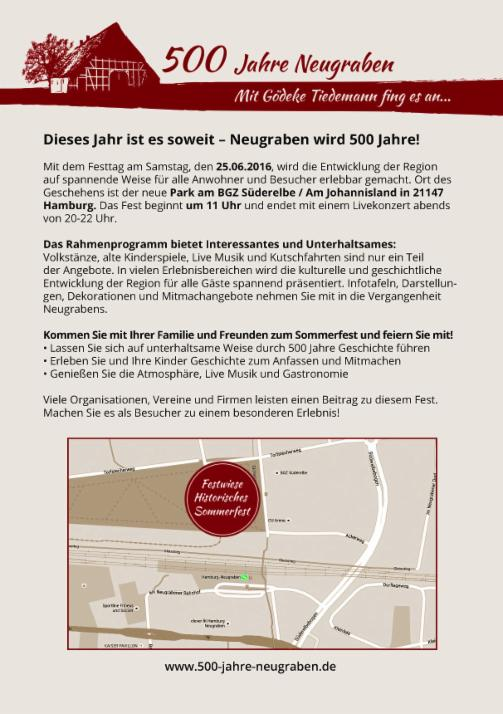

- Wir über uns
- Leitbild
- Kursangebot
- Angebote für Geflüchtete
- Kindergeburtstage
- "Unsere Welt braucht eineTherapie", Gesprächsabend am 22. Juni
- BGZ Sommerfest am 23. Juni
- Tanztheater "Weltenspringer" für Kids, Aufführung am 25. Juni im Rieckhof
- Ausstellungen
- Literaturcafé im Striepensaal
- AG Süderelbe-Archiv
- Kulturtage Süderelbe 2017 - 03. Nov. bis 19. Nov.
- Fortbildung zur Sprachförderkraft mit künstlerischen Mitteln
- Puppentheater Kollin Kläff: Termine ab Oktober 2017
- Kontakt / Impressum
- Hier finden Sie uns
- BGZ Süderelbe
- Links
-
Archiv
- PartyKunst - am 18. Mai im Haus der Jugend
- Kulturhausfest am So 7.5.17
- Matinee-Lesung über die Finnen und ihr Land von und mit E. Apffelstaedt am 07. Mai 17
- TUULETAR, Vocal Folk Hop aus Finnland am 05. Mai 17
- Südlesetage
- Hase - ohne Igel?! Weihnachtsmärchen am 13. Dez.
- Tonali Konzert am 12.11.16 um 18 Uhr
- Dirk Janssen: Expedition zu den Devils Holes in Venezuela, Vortrag am 10. Nov.
- Einmal China und zurück Ausstellung, Vernissage 7.11.16 19.30 Uhr
- Cajon Bau&Spiel-Workshop am 06. Nov. 16
- Johannes Kirchberg: HEUTE ZWISCHEN GESTERN UND MORGEN am 5. Nov.
- Lesung Sofia + Leonid Tolstoi 2.11.16, 19 Uhr
- Der kulturelle Rucksack
- Vernissage und Lesung: "Geschichten aus fünf Jahrhunderten" am 21. Okt.
- Christin Neddens' Oceanside Quartett am 28. Okt.
- 500 Jahre Neugraben
- Historisches Sommerfest, Stadtteilfest am 25. Juni
- Historische Rundgänge
- "KulturPinsel": Ausstellung in der Bücherhalle Harburg
- Theater Mär: "Die Königin der Farben" am 17. März
- Abi Wallenstein & Bluesculture am 22. Jan. 16
- Mittsommernachtstango - Musik u. Dokumentarfilm am 02. Nov.
- Theater UniVerbal: DIE DA! am 31. Okt.
- Tanztheater-Aktion "Games" für Kinder am 14. Juni
- Tag der offenen Tür am 30.05.15
- Blues Harp Workshop mit Steve Baker am 19. Okt. 14
- Walking Actors: "Ein bunter Strauß voll Leben" am 8. Nov.
- KulturDialog am 13.05.14
- Branimir Georgiev - Bilder aus Hamburg Süd - Vernissage am 5. Sept.
- Eröffnung BGZ Süderelbe am 29. Febr. 12
- Mosaikwand
- Ferienprogramm für Kinder
- Theatergruppe im Aufbau
"Historisches Sommerfest"
am Sonnabend, den 25. Juni 2016, 11 bis 22 Uhr
  
Neugraben ist seit 500 Jahren nachweislich besiedelt. Dieses Jubiläum wird am Sonnabend, den 25.6.2016, von 11 bis 22 Uhr auf der großen Wiese vor dem Bildungs- und Gemeinschaftszentrum Süderelbe (BGZ) zünftig gefeiert. Der Park ist gut zu erreichen; er liegt direkt am S-Bahnhof Neugraben und einem P+R Parkhaus. Was mit Gödeke Tiedemann 1516 seinen Anfang nahm, hat sich bis heute zu einem wachsenden Stadtteil der Hansestadt Hamburg entwickelt. Bürger aus unterschiedlichen Bevölkerungsgruppen haben hier neben den Familien aus dem bäuerlichen Kern des alten Dorfes ein Zuhause gefunden.Mit dem Festtag wird die Entwicklung der Region auf spannende Weise für alle Besucher erlebbar gemacht. Neben unterhaltsamen Präsentationen im Bühnenprogramm werden die besonders eingängigen historischen Ereignisse der Region in kleinen Darstellungsbereichen vorgestellt. Ob bäuerliches Leben, ein Blick ins Klassenzimmer der Jahrhundertwende, die Wirtschaftswunderzeit mit Eventgastronomie, Kutschfahrten oder der Kinder- und Familien-Spaßbereich: Es gibt Spannendes zu erleben! Inszenierungen, ansprechende Dekorationen, historische Informationen und „Geschichte zum Anfassen“ laden zum Mitmachen und Weiterbilden ein. „Mittendrin statt nur dabei!“ ist hier ganz klar das Motto. Gemeinsam mit vielen Institutionen, Vereinen, Schulen und Neugrabener Bürgern wird es Theater und Tanz, Musik und Kulinarisches, Artistik und Bands geben. Organisiert und ausgerichtet wird das Fest durch das Kulturhaus Süderelbe in Kooperation mit der steg Hamburg, SAGA GWG, der HNT (Hausbruch-Neugrabener-Turnerschaft) und den Firmen Freyhand und Bobeck-Medien. Mit finanzieller Unterstützung vom Bezirksamt Harburg, SAGA GWG „Stiftung Nachbarschaft“, Heimspiel Neuwiedenthal (Joachim-Hertz-Stiftung), den Verfügungsfonds Neugraben und Neuwiedenthal und der Kurt Denker-Stiftung, können Akteure wie die Loki Schmidt-Stiftung und lokale Größen wie der Ring für Heimattanz, der Pfadfinderstamm „Ulrich von Hutten“, das Süderelbe-Archiv, ProQuartier, die Freunde der Tempofahrzeuge und der Verein Plattdüütsch leevt – nur ein paar Beispiele aus der Reihe der Teilnehmenden – mit allen Besuchern in den Festtag starten. Viel Buntes und jede Menge Spaß sind garantiert! |
Kommen Sie und feiern Sie mit!
| Vorläufiges Festprogramm 11.00 Uhr Öffnung des Veranstaltungsgeländes 11.30 Uhr Ansprache durch Herrn Völsch (Bezirksamtsleiter Harburg) und Veranstalter 11.45 Uhr Öffnung der Erlebnis- und Informationsbereiche 13.00 Uhr Traditionelle Blasmusik vom Musikzug Fischbek 14.30 Uhr Theateraufführung des Gymnasiums Süderelbe 16.00 Uhr Chorgesang des MGV Sängerlust Scheideholz von 1919 mit dem Damenchor Hamburg-Neugraben von 1951 18.00 Uhr Band „Trio Kosmopolka" 20.00 Uhr Hauptband „Frölich Geschray" mit Mittelalterfolk 21.30 Uhr Feuershow mit Jonglage und Akrobatik Bis 23.00 Uhr Ausklang der Veranstaltung in der Gastronomie „Willkommen im Wirtschaftswunder" im Stil der 50er und 60er Jahre |